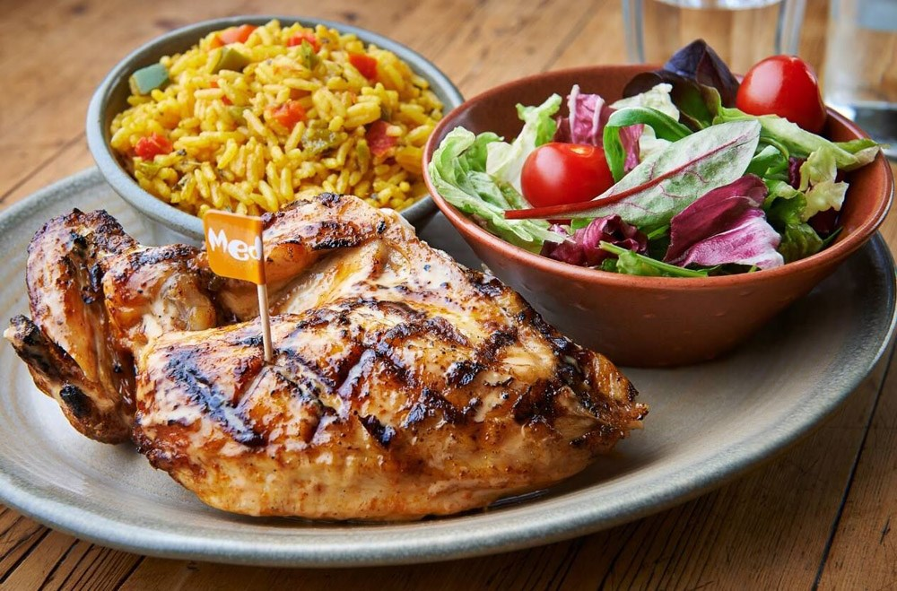

At Nando's, we select only the best succulent chickens and trim them of extra fat before they are marinated in Nando's traditional Peri-Peri flavours... so the unique Nando's taste is absorbed right down to the bone.
The restaurant was founded in 1987 in the Johannesburg suburb Rosettenville, by Mozambique-born Fernando Duarte and South African-born Robert Brozin. Upon visiting a Colonial Portuguese-African takeaway named Chickenland, and trying the chicken with peri peri (a sauce that was first developed in nearby Mozambique and further refined in South Africa before being exported to other Portuguese territories and mainland Portugal) they bought the restaurant for about 80,000 rand.
